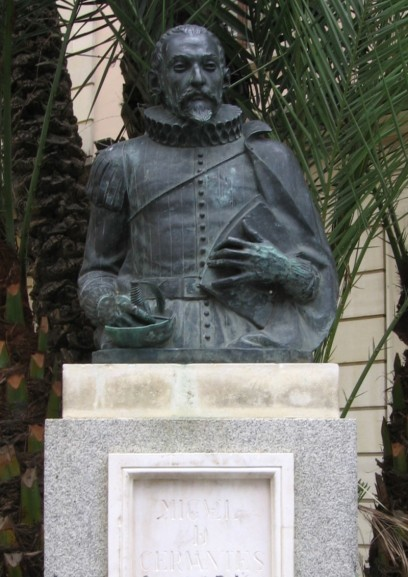

Modern-day Seville is remarkably similar to seventeenth-century Seville.
Cervantes knew the city very well: he worked there for a period as a tax collector, and was even imprisoned due to 'irregularities' in his accounts. The prison where he was incarcerated is located on what is now one of Seville's busiest shopping streets, Calle Sierpes. The city has erected a bust of Cervantes in the street behind the prison, in commemoration of its most famous prisoner.
Cervantes' familiarity with the city is manifest throughout "Rinconete y Cortadillo". Click the pins on the map below to read about the places mentioned in the story and what role they play in modern-day Seville.